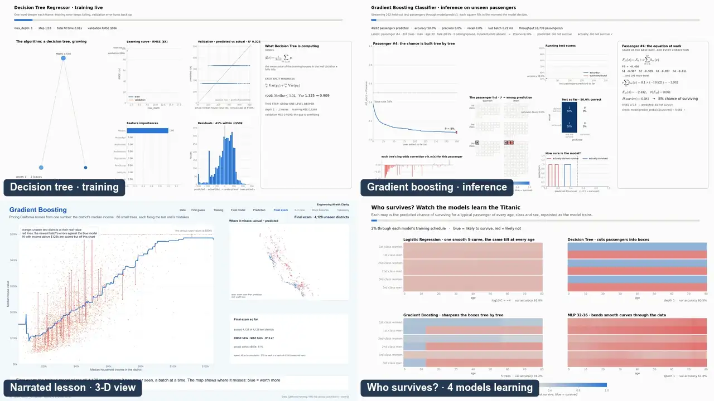

MACHINE LEARNING, ANIMATED
Watch the algorithm itself learn.
Then watch it explain every prediction.
21 scikit-learn models learn California house prices and Titanic survival, two classic datasets you already know, frame by frame. Every frame is a real model state, and every prediction is worked out and checked against the model's own answer. The black box, opened.
- 80videos
- 21models
- 2classic datasets
- ✓every prediction checked

🆚 Why this is different from other ML explainers
Most explainers show you an idea of an algorithm. This shows you the algorithm itself, running.
| 📺 Most ML explainers | 🎬 Here |
|---|---|
| 🎨 Hand-animated or idealised curves, drawn to look right | 🔁 Every frame is a snapshot of a real scikit-learn model, taken during real training |
| 🧸 Synthetic blobs, generated to behave for the demo | 📚 Two classic datasets of real records, familiar on purpose: 20,640 California census districts and 1,309 Titanic passengers. You already know the data, so all your attention goes to the algorithm |
| 🏁 The finished model only | 🎞️ A model's whole life: data → first guess → training → final model → inference → test exam |
| 📉 A loss curve and an accuracy number | 🔍 The internals themselves: weights, splits, votes, support vectors, bell curves, activations |
| 🪄 "The model says 0.82", taken on trust | ✅ The prediction worked out step by step, and checked against the model's own predict before it may show ✓ |
| 🧮 After-the-fact approximations of what the model did | 🧠 The model's own parameters, read straight from the fitted estimator |
| 🔬 One algorithm at a time, each on its own example | ⚖️ Many models on the same data, side by side: races, landscapes, a scoreboard |
| 🤷 Training accuracy, or no score at all | 🧪 Train vs validation vs held-out test, no leakage, and statistical tests before any "better" |
| 👀 Watch-only | 🛠️ Open source and reproducible: one command regenerates any video, and tests guard every rule |
🎁 What you'll get out of it
| If you are… | You'll walk away with… |
|---|---|
| 🌱 An ML enthusiast or student | Intuition that formulas alone don't give: why a deep tree over-fits, why boosting takes many small steps, why KNN "learns" nothing, and what a neural network's weights actually do. |
| 🧑💻 A data scientist or ML engineer | A sharper eye for model behaviour as it happens: bias and variance in motion, regularisation paths, overconfident scores, and honest evaluation habits (validation for choices, the test set once). |
| 🏢 A lead who explains models to stakeholders | Pictures that answer "why did the model say that?" for a single case, with numbers that match the model exactly. |
| 🧑🏫 An educator or content creator | Ready-made lessons, one algorithm each: 108-second versions that work with the sound off, voiced Manim versions, and the code to make your own. |
| 💼 Someone preparing for interviews | A visual memory of 20+ algorithms: how each one trains, how it predicts, and where it breaks. |
| 🛠️ A builder of ML tools | A tested pattern for truthful visualisation: immutable snapshots, checked predictions, no invented frames. |
🎬 The gallery
Every card loops a preview of the real video. Click one to play it in full; the link in the player opens straight to that video, ready to share. The Manim lessons have a voice-over 🔊, so turn the sound on.
🏠 California Housing · 📊 Live dashboards 18
🏠 California Housing · 🏁 Comparison scenes 2
🏠 California Housing · 🎓 Narrated lessons 9
🏠 California Housing · 🎞️ Voiced lessons in Manim 11
🚢 Titanic · 📊 Live dashboards 18
🚢 Titanic · 🏁 Comparison scenes 2
🚢 Titanic · 🎓 Narrated lessons 9
🚢 Titanic · 🎞️ Voiced lessons in Manim 11
🔍 Opening the black box
A trained model is usually a black box: numbers go in, a prediction comes out, and you are asked to
trust it. These videos open the box. They draw the model's own internals, read straight from the
fitted estimator (coef_, tree_, estimators_, support_vectors_, theta_ and var_, coefs_),
not an after-the-fact approximation such as a surrogate model or a feature-attribution estimate. That
is what makes every explanation checkable: the worked equation is the model's real computation, so
it has to land on predict's exact answer before it prints ✓.
| Model | 🗃️ What is inside the box | 🔎 Why it gave this answer |
|---|---|---|
| 📏 Linear, Ridge, Lasso, SGD | every weight, drawn as an edge whose width and colour follow it; Lasso's zeroed features go dashed | each feature's push w·x, summed with the bias into the price |
| 📈 Logistic regression, perceptron, linear SVM | the same weighted sum, plus the S-curve or the ±1 margin | the score z, its side of the threshold, and σ(z) where it is a real probability |
| 🌳 Decision tree | every split, with its threshold in real units ("age ≤ 12.5?"), nodes coloured by their examples' average price or survival share | the exact path of yes/no questions, and the training examples that share its leaf |
| 🌲 Random forest | the individual trees, not just their average | every tree's vote, and the average the forest returns |
| 🚀 Gradient boosting | each tree's correction, shrinking as the errors shrink | the running total from the base rate F₀, tree by tree, to the final answer |
| 📍 k-nearest neighbours | the stored training examples, which is all KNN keeps | the k nearest examples and their prices or fates |
| 🛡️ SVM (RBF kernel) | which training passengers became support vectors, and how much each weighs (α) | the strongest pulls α·y·K(xᵢ, x) and the margin f(x) they add up to |
| 🔔 Naive Bayes | the base rates and one bell curve per feature and outcome | how strongly each feature's value favours "survived" over "did not" (its log-likelihood ratio) |
| 🧠 Neural network (MLP) | every weight, re-coloured each epoch as training moves it | the forward pass: which hidden units fire and how much signal each edge carries |
Seeing the box open teaches things a score never shows:
- Why linear models plateau: they can only tilt one weighted sum.
- Why one deep tree over-fits: its leaves shrink to single passengers.
- Why averaging trees helps: the votes spread out, and their mean is steadier than any one tree.
- What KNN actually learns: nothing but its memory.
Honest limits:
- An MLP's hidden units have no human meaning. The diagram shows the computation, not a concept.
- The KNN and SVM maps squeeze 8 features onto 2 axes (PCA), so "near" on the map is only roughly "near" to the model.
- A margin model's score (SVM, perceptron) is never called a probability.
👀 How well training and inference are visualised
Most "ML animations" are a loss curve and a confusion matrix. These videos show the algorithm itself working, synchronised with the numbers that prove it, at both stages of a model's life.
🏋️ At training time
- Every frame is real training work. A frame is drawn the moment the model finishes a real unit
of work: a
partial_fitchunk, a few more trees, one level deeper, a weaker penalty, or more training rows. Nothing is interpolated between states that never existed. - The algorithm animates, not just its scores. Weighted-sum edges thicken and change sign, decision trees grow level by level, forests fill in tree by tree, boosting's corrections shrink, support vectors get ringed, Naive Bayes' bell curves sharpen, and every one of an MLP's weights changes colour each epoch.
- Live equations with the current numbers. A side panel shows the model's formula, the objective it is minimising (with its value right now), and what this step changed: SGD's update rule, the boosting update F_M = F₀ + ν Σ h_m, a tree's root split and its impurity drop.
- Under- and over-fitting are visible. Train and validation curves share one chart, so you watch a decision tree's training score keep improving while its validation score turns back.
- Honest timing. Only the model's own work is timed; scoring and drawing are excluded.
🔮 At inference time
- Unseen data streams through
predict(). Held-out test rows are predicted batch by batch, and latency and throughput are measured on the real calls. - Every newest prediction is explained. The diagram traces the example through the model (the tree path, each tree's vote, the nearest neighbours, the forward pass), and the equation panel works the formula through with that example's numbers.
- Every explanation is checked. Each card ends with
check: model.predict(x) = … ✓(orpredict_proba/decision_function). An independent review re-ran it on all 262 Titanic test passengers: the worked equation matched the model to within 1e-13. - Results pile up where you can read them. A California map colours every priced district, and the Titanic passenger list fills in square by square, grouped by class and by women and men, with ✗ on every wrong call. You can watch "women and children first" appear.
- Running scores update live: RMSE, MAE and R² for prices; accuracy, recall, the confusion matrix and a confidence histogram for survival.
🎓 In the narrated lessons
Each lesson is a 108-second, 2560×1440, 30 fps story of one algorithm that works with the sound off, in ten chapters: title → data → first guess → training → final model → prediction on an unseen example → final exam → 3-D view → more features → takeaway.
- Training cuts from one real snapshot to the next, and the final curve equals
model.predict. - The 3-D chapter draws the model's output as a surface over two inputs while the camera swings.
- The "more features" chapter refits on every input and says "better" or "worse" only when a paired bootstrap (prices) or an exact McNemar test (survival) says the difference is real.
- The Manim versions replay the same lessons with smooth reveals and transitions; every chapter still ends on exactly the matplotlib picture.
- 🔊 The Manim versions have a voice-over: a narrator reads each chapter's own captions, with every symbol and abbreviation said in words (θ₀ as "theta zero", MLP as "multi-layer perceptron"). Where a chapter's voice runs long, its last frame holds, so a voiced lesson runs about 2½ minutes.
🏆 Scoreboard
Test-set results from the live dashboards (all 8 features). The lessons use one or three features on
purpose, so each picture tells one story; their scores are in each lessons folder's lessons_summary.csv.
| 🏠 Regressor | Test RMSE | Test R² | 🚢 Classifier | Test accuracy | |
|---|---|---|---|---|---|
| 🥇 Gradient Boosting | $49.7k | 0.812 | 🥇 Gradient Boosting | 83.6% | |
| 🥈 Random Forest | $50.9k | 0.802 | 🥇 MLP (32-16) | 83.6% | |
| 🥉 MLP (64-32) | $53.2k | 0.784 | 🥉 KNN (k=11) | 82.8% | |
| KNN (k=10) | $64.1k | 0.686 | SVM (RBF) | 82.4% | |
| Decision Tree (depth 18) | $69.6k | 0.631 | Random Forest | 79.8% | |
| Lasso | $74.8k | 0.573 | Logistic Regression | 79.4% | |
| Linear Regression | $75.0k | 0.571 | SGD (logistic) | 77.1% | |
| Ridge | $75.0k | 0.571 | Naive Bayes | 77.1% | |
| SGD Regressor | $77.3k | 0.544 | Decision Tree (depth 14) | 74.0% |
The decision trees are reported at the end of their depth sweeps, which over-fit on purpose: that is the lesson their videos teach.
🔒 Truthfulness rules
These are enforced by the test suites, not just promised:
- 🔁 Real states only. Every curve, boundary, weight and metric on screen comes from a real model state; frames are held, never interpolated into states that did not exist.
- ✅ Checked predictions. A worked prediction must reproduce
predict,predict_probaordecision_functionbefore it may print ✓. - 🧪 No leakage. Scalers and imputation are fitted on training rows only; test rows appear only at inference and in the final exam.
- 🎯 Honest labels. Margin models (SVM, perceptron) show a signed score, never a "probability".
- ⚖️ Honest verdicts. "Better" or "worse" is claimed only when a paired bootstrap or exact McNemar test supports it.
- ⏱️ Honest timing. Fit and predict times count only the model's own work.
🚀 Quick start
You need Python 3.10+ and ffmpeg on your PATH (brew install ffmpeg). Nothing is installed as a
package: each project finds the kit next to it.
git clone https://github.com/di37/animated-machine-learning-algorithm.git
cd animated-machine-learning-algorithm
🏠 California Housing
cd house_price_animations
pip install -r requirements.txt
python animate.py --model gradient_boosting # live window + training and inference videos
python animate.py --scene race # The Algorithm Race
python animate.py --scene map # Watch the model learn California
python animate_lessons.py --model decision_tree # one narrated lesson
🚢 Titanic
cd titanic_animations
pip install -r requirements.txt
python animate_titanic.py --model random_forest
python animate_titanic.py --scene race
python animate_titanic.py --scene landscape # Who survives?
python animate_titanic_lessons.py --model knn
🎞️ Manim lessons (set up manim_lesson_kit/.venv first; its README shows how)
cd house_price_manim_lessons
../manim_lesson_kit/.venv/bin/python animate_manim_lessons.py --model linear_regression
🔊 Voice-over (ElevenLabs: put ELEVENLABS_API_KEY=... in a .env file at the repo root, which git ignores)
cd house_price_manim_lessons
python3 voice_manim_lessons.py --model linear_regression # --script-only shows the words first, free
Every command takes --list and --help. Dashboards also accept --no-live (record only),
--phase training|inference|both and --format gif.
⭐ If an algorithm finally clicked for you
Star the repository so more learners find it, and share a video with someone learning ML.
★ Star on GitHub